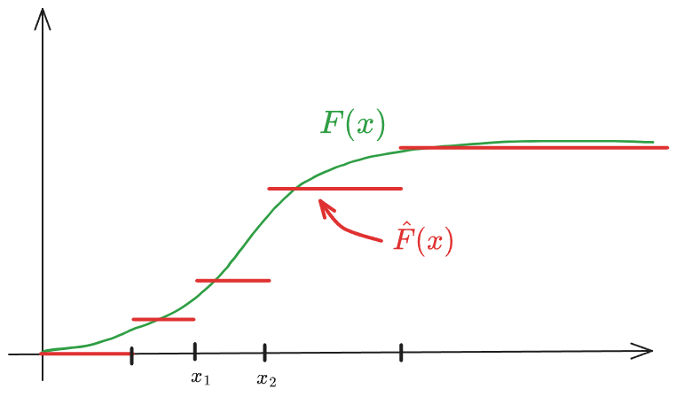

Bootstrapping and the EM-algorithm
Bootstrapping
Bootstrapping in statistics is a resampling technique used to estimate the distribution of a statistic (like a mean, median, or regression coefficient) by repeatedly sampling from the data we already have.
Core Idea:
Instead of collecting new data (which can be expensive or impossible), you:
- Take your original dataset of size n
- Randomly sample n observations with replacement (this is key)
- Replacement means that the same observation can appear multiple times and some observations may not appear at all.
- Compute the statistic of interest (e.g., the mean)
- Repeat this many times (often thousands)
- Use the resulting distribution of those computed statistics to draw conclusions
Suppose you have 10 observations and want to estimate the mean’s uncertainty:
- You resample those 10 values (with replacement) 1,000 times
- Compute the mean for each resample
- Now you have 1,000 “bootstrapped means”
- The spread of these gives you an estimate of variability and confidence intervals
Non-parametric bootstrapping
is the standard form of bootstrapping where you don’t assume any specific distribution for your data (like normal, exponential, etc.).
Imagine your dataset is:
[2, 4, 5, 7, 9]
Non-parametric bootstrapping treats this as a “mini population.” A resample might look like:
[4, 4, 7, 2, 9]
No assumptions—just reshuffling with repetition.
Simplest case: iid samples \(X_1, \dots, X_n \sim F\) where \(F\) is an unknown cdf. Find estimator of: \[ \theta = t(F) \] Il Principio di Plug-in è un metodo per stimare parametri della popolazione senza assumere che i dati seguano una distribuzione specifica (come la Normale). L’idea è trattare il campione raccolto come se fosse l’intera popolazione.
e.g. \[ \theta = \mathbb E(X) = \int_{-\infty}^{\infty} x \ \mathrm d F(x) = \begin{cases}\int_{-\infty}^\infty x f(x) \mathrm d x \quad & \text{if} X \text{ is continuous} \\ \sum_x x f(x) \quad & \text{if}\ X\ \text{is discrete}\end{cases} \]
or
\[ \theta = \mathrm{Var}(X)=\int (x-\mathbb E(X))^2 \ \mathrm d F \]
- \(F\) can be estimated non-parametrically by the estimator \[ \hat F (\pmb x) = \frac 1n \sum_{i=1}^n I(\pmb x_i \leq \pmb x) \] the empirical cdf. La funzione di distribuzione empirica (\(\hat{F}\)) è uno stimatore non parametrico che ‘salta’ di \(1/n\) in corrispondenza di ogni dato osservato. È fondamentale perché, per il teorema di Glivenko-Cantelli, sappiamo che all’aumentare di \(n\), \(\hat{F}\) converge alla distribuzione vera \(F\).

- The corresponding (plug-in) estimator of \(\theta\) is \[ \hat \theta = t(\hat F)\]
Thus, if \(\theta = \mathbb E(X)=\int x \mathrm dF\), \[ \hat \theta = \int_{-\infty}^\infty x \ \mathrm d \hat F = \sum_x x \hat f(x) = \sum_{i=1}^n x_i \frac 1n = \bar x = \mathbb E_{\hat F}(X) \] L’integrale rispetto a \(d\hat{F}\) si trasforma in una sommatoria perché la distribuzione empirica è discreta e assegna peso \(1/n\) a ogni punto.
and if \(\theta = \mathrm Var(X) = \int (X-\mathbb E(X))^2 \ \mathrm dF\),
\[\begin{align*} \hat \theta = \widehat{\mathrm{Var}(X)} = \sum_x (x-\mathbb E (X))\hat f(x) = \\ = \sum_{i=1}^n(x_i-\bar x)^2 \frac 1n = \frac 1n \sum_{i=1}^n(x_i-\bar x)^2= \mathrm{Var}_{\hat F}(X) \end{align*}\]
Nota: Lo stimatore plug-in della varianza usa il divisore \(n\). Sebbene sia leggermente distorto (sottostima la varianza reale), è la conseguenza naturale dell’applicazione del principio di sostituzione sulla popolazione campionaria.
If \(\theta = \mathrm{SD}(X)\), \[ \hat \theta = \widehat{\mathrm{SD}(X)} = SD_{\hat F} (X) \]
If \(\theta=Skew(X)=\mathbf E((\frac{X-\mu}{\sigma})^3)\), the plug in estimator of \(\theta\) is: \[ \hat \theta = Skew_{\hat F}(X) \]
Il vero vantaggio del metodo plug-in emerge con parametri come lo Skewness o la Mediana, dove il calcolo analitico della distribuzione dello stimatore sarebbe molto difficile. Sostituendo \(F\) con \(\hat{F}\), otteniamo una stima immediata basata sui dati.
What is the sampling distribution of these plug-in estimators if we replace \(F\) by \(\hat F\)?
Approximate method
- Generate \(B\) bootstrap samples \[ X^1, X^2 , \dots , X^B \quad \text{where} \ X^b = (x_1^b, x_2^b, \dots, x_n^b) \] and \[ x_i^b\overset{iid}{\sim} \hat F\ \ \text{ for }\ \ i=1,2,\dots,n, \quad b=1,2,\dots,B \] Estrarre un campione da \(\hat{F}\) equivale a fare un campionamento con reinserimento (sampling with replacement) dal set di dati originale \(\{x_1, \dots, x_n\}\). Ogni campione bootstrap ha la stessa numerosità \(n\) del campione originale.
- Compute corresponding bootstrap replicates of plug-in estimator \(\hat \theta\) of \(\theta\), \[ \hat \theta^b = t(\hat F^b) \] Per ogni nuovo set di dati ‘artificiale’ \(X^b\), calcoliamo la statistica di interesse (es. media, mediana, varianza). Queste \(\hat{\theta}^b\) formano la distribuzione bootstrap, che usiamo come approssimazione della distribuzione campionaria reale dello stimatore.
- Estimate e.g. \(\mathbb E_{\hat F}(\hat \theta)\) and \(\mathrm{SD}_{\hat F}(\hat \theta)\) or, in general \(\mathbb E(h(\hat \theta))\), by Monte-Carlo intergration, i.e. \[ \widehat{\mathbb E(\hat \theta)} = \frac 1B \sum_{b=1}^B \hat \theta ^b \] and \[ \widehat{\mathrm{SD}(\hat \theta)} = \sqrt{\frac 1{B-1} \sum_{b=1}^B \Big(\hat \theta ^b-\widehat{\mathbb E(\hat \theta)}\Big)^2} \] Poiché calcolare esattamente tutte le possibili combinazioni di \(\hat{F}\) sarebbe computazionalmente impossibile (sono \(n^n\)), usiamo l’integrazione Monte Carlo. Più grande è \(B\) (solitamente \(B \geq 1000\)), più la nostra stima della variabilità di \(\hat{\theta}\) sarà precisa. La deviazione standard delle repliche bootstrap è la stima dell’errore standard dello stimatore originale \(\hat{\theta}\).
Exact method
Mentre il metodo approssimato usa Monte Carlo per estrarre \(B\) campioni, il Metodo Esatto calcola il valore atteso del plug-in estimator pesando ogni possibile combinazione campionaria per la sua probabilità teorica. Questo elimina l’errore di simulazione, lasciando solo l’errore statistico dovuto a \(n\) piccolo.
It is applicable for small \(n\). If the original sample \(x_1,x_2,\dots ,x_n\) consists of distinct values the number of unordered outcomes. (\((x_4,x_4,x_1,x_2)\) the same as \((x_1,x_2,x_4,x_4)\)) is \[ \binom{2n-1}{n-1} \approx \Big(n\pi \Big)^{-\frac 12}2^{2n-1}\ \overset{n=10}= \ 92378 \] and the probability of observing \(m_1,m_2, \dots, m_n\) of each value \(x_1, x_2, \dots, x_n\) is \[ \frac{n!}{m_1!m_2!\dots m_n!} \cdot \underbrace{\Big(\frac 1n\Big)^{m_1}\Big(\frac 1n\Big)^{m_2}\cdot \dots \cdot \Big(\frac 1n\Big)^{m_n}}_{n^{-n}} \] since \(m_1,\dots ,m_n \sim \mathrm{multinorm}\Big(n,\Big(\frac 1n, \frac 1n, \dots , \frac 1n\Big)\Big)\)
infatti, ogni campione bootstrap ha una probabilità specifica di verificarsi, dettata dalla distribuzione Multinomiale. Poiché la ECDF assegna probabilità \(1/n\) a ogni \(x_i\), la probabilità di osservare un vettore di frequenze \(\pmb m\) (dove \(\sum m_i = n\)) segue la logica del ‘lancio del dado’ a \(n\) facce ripetuto \(n\) volte.
Riassumendo:
- Ideal (exact) Bootstrap: Teoricamente perfetto, ma computazionalmente impossibile per \(n > 15\) circa.
- Monte Carlo Bootstrap: L’approssimazione pratica che usiamo tutti i giorni, dove l’errore diminuisce all’aumentare di \(B\).
Parametric bootstrapping
A differenza del bootstrap non parametrico, qui assumiamo di conoscere il modello (es. i dati seguono una Normale o una Poisson). L’unica cosa che non conosciamo è il valore esatto dei parametri \(\pmb \theta\) di quella distribuzione.
Suppose original data \[ \pmb x = (x_1,x_2, \dots, x_n) \sim F(\pmb x; \pmb \theta) \] where \(F\) is known and \(\pmb \theta\) is unknown.
Estimate \(\pmb \theta\) by \(\hat {\pmb \theta}\) (by given method, e.g. ML) and \(F(\pmb x; \pmb \theta)\) by \(F(\pmb x; \hat{\pmb \theta})\)
Il primo passo consiste nell’usare i dati reali per trovare la ‘migliore’ distribuzione teorica che li descrive. Di solito si usa la Maximum Likelihood (ML).
Algorithm:
- Simulate \(\pmb x^1, \pmb x^2, \dots, \pmb x^B \overset{iid}{\sim} F(\pmb x;\hat \theta)\)
Qui non campioniamo più dai dati originali (non facciamo reinserimento). Invece, usiamo il computer per generare nuovi numeri casuali direttamente dalla distribuzione teorica \(F(\pmb x; \hat{\pmb \theta})\). - Compute corresponding bootstrap replicates of \(\hat{\pmb \theta},\ \hat{\pmb \theta}^b, \ b=1,2,\dots, B\) (by same given method)
Per ogni campione simulato, ricalcoliamo il parametro con lo stesso metodo (es. ML). Questo ci dice quanto sarebbe variata la nostra stima se la popolazione fosse esattamente quella identificata da \(\hat{\pmb \theta}\). - Estimate \(\mathbb E(h(\hat \theta))\) by Monte-Carlo integration
| Vantaggio | Svantaggio |
|---|---|
| Se l’assunzione sul modello \(F\) è corretta, il bootstrap parametrico è generalmente più preciso di quello non parametrico (ha un errore standard minore), perché sfrutta l’informazione aggiuntiva data dalla forma della distribuzione. | Se però il modello scelto è sbagliato (es. i dati non sono Normali ma noi assumiamo che lo siano), i risultati del bootstrap parametrico saranno distorti e inaffidabili. |
Estimating and correcting for bias
Having estimated \(\mathbb E(\hat \theta)\) by \(\widehat{\mathbb E(\hat \theta)} = \frac 1B \sum_{b=1}^B \hat \theta^b\), an estimator of \(\widehat{\mathrm{Bias}(\hat \theta)}=\widehat{\mathbb E(\hat \theta)}-\hat \theta\) is: \[ \widehat{\mathrm{Bias}(\hat \theta)} = \widehat{\mathbb E(\hat \theta)} - \hat \theta \]
Subtracting the estimated bias from \(\hat \theta\), we obtain a bias-corrected estimator:
\[ \hat \theta_c = \hat \theta - \widehat{\mathrm{Bias}(\hat \theta)} \]
Typically has less but non-zero bias and sometimes higher variance.
\(X_1,\dots,X_n \overset{\mathrm{iid}}{\sim} F\), with \(F(x)=1-e^{-\lambda x}\) (exponential distribution)
- The MLE of \(\lambda\) is \(\hat \lambda = \frac n{\sum_{i=1}^n X_i}\)
- Observed data gives \(\hat \lambda= 2.0\)
Let \(\pmb x^b\) and \(\hat \lambda^b\), \(b = 1,2,\dots, B\) denote the parametric bootstrap samples from \(F(\hat \lambda)\), and suppose \(\frac 1B \sum \hat \lambda ^b = 2.24\)
An estimate of \(\mathbb E(\hat \lambda)\) is then \(\widehat{\mathbb E(\hat \lambda)} = \frac 1B \sum \hat \lambda^b = 2.24\) and an estimate of \(\mathrm Bias (\hat \lambda) = \mathbb E(\hat \lambda)-\lambda\) is \[ \widehat{\mathrm{Bias}(\hat \lambda)} = \widehat{\mathbb E(\hat \lambda)} -\hat \lambda = 2.24 - 2 = 0.24 \] A bias corrected estimate of \(\lambda\) is then: \[ \hat \lambda_c = \hat \lambda - \widehat{\mathrm{Bias}(\hat \lambda)} = \hat \lambda - \Big ( \frac 1B \sum_{b=1}^B \hat \lambda ^b-\hat \lambda\Big) = 2\hat \lambda - \frac 1B \sum_{b=1}^B \hat \lambda ^b = 2-0.24 = 1.76 \]
In this particular example, we know analytically that \[ \mathbb E(\hat \lambda) = \frac n{n-1}\lambda \overset{n=10}= \frac {10}9 \lambda = 1.11 \lambda \] This implies that \[ \mathbb E(\hat \lambda^b | \hat \lambda) = \frac n{n-1}\hat \lambda \] Thus, \[\begin{align*} \mathbb E(\hat \lambda_c | \hat \lambda) = \mathbb E \Big ( 2\hat \lambda - \frac 1B \sum \hat \lambda ^b \vert \hat \lambda \Big ) = \end{align*}\]
Bootstrap confidence intervals
Percentile method
- Generate \(X_1, X_2, \dots , X_B \overset{\text{iid}}{\sim} \hat F\)
- Compute \(\hat \theta_1, \hat \theta_2, \dots, \hat \theta_B\)
- Compute empirical \(\alpha/2\) and \(1-\alpha/2\) quantiles of \(\hat \theta^{(b)}, \hat \theta_{\alpha/2}^{(b)}, \ \hat \theta_{1-\alpha/2}^{(b)}\) Justification: valid if a strictly increasing transformation \(\phi(\theta)\) exists, such that \(\phi(\hat \theta)-\phi(\theta)\) has cdf \(H(z)=1-H(-z)\). Then:
\[ \mathbb P\Big(h_{\alpha/2} \leq \phi (\hat \theta) -\phi(\theta) \leq h_{1-\alpha/2}\Big) = 1-\alpha \tag{1}\]
where \(h_\alpha= H ^{-1}(\alpha)\).
Given an existing implicit \(\phi\), bootstrap replicates of \(\phi(\hat \theta)-\phi(\theta)\) are given by \(\phi(\hat \theta^{(b)})-\phi(\hat \theta)\) satisfying \[ \mathbb P\Big(h_{\alpha/2} \leq \phi(\hat \theta^{(b)})-\phi(\hat \theta)\leq h_{1-\alpha/2}\Big) \simeq 1-\alpha \] and so: \[ \mathbb P\Big (\underbrace{\phi^{-1}(h_{\alpha/2} + \phi (\hat \theta)) }_{\hat \theta^{(b)}_{\alpha/2}} \leq \hat \theta^{(b)} \leq \underbrace{\phi^{-1}(h_{1-\alpha/2} +\phi(\hat \theta)}_{\hat \theta^{(b)}_{1-\alpha/2}} \Big) \simeq 1-\alpha \] The empirical quantiles \(\hat \theta_{\alpha/2}^{(b)}\) and \(\hat \theta^{(b)}_{1-\alpha/2}\) of \(\hat \theta^{(b)}\) are explicitly known from bootstrap distribution of \(\hat \theta^{(b)}\).
From Equation 1 we have: \[ \mathbb P\Big ( -h_{\alpha/2} \geq \phi(\theta)-\phi(\hat \theta) \geq -h_{1-\alpha/2}\Big) = 1-\alpha \] Since \(H(z) = 1-H(-z),\quad h_{\alpha/2} = -h_{1-\alpha/2}\) and so \[ \mathbb P\Big ( h_{\alpha/2} \leq \phi(\theta)-\phi(\hat \theta) \leq h_{1-\alpha/2}\Big) = 1-\alpha \] and \[ \boxed{ \mathbb P\Big (\underbrace{\phi^{-1}(\phi(\theta)-h_{\alpha/2})}_{\hat \theta_{\alpha/2}^*} \leq \theta \leq \underbrace{\phi^{-1} (\phi(\hat \theta)-h_{1-\alpha/2})}_{\hat \theta_{1-\alpha/2}^*} \Big) = 1-\alpha } \] Thus, \(\Big [\hat \theta_{\alpha/2}^*, \hat \theta^*_{1-\alpha/2}\Big]\) is a confidence interval for \(\theta\). Note that \(\phi\) and \(h_{\alpha/2}, \ h_{1-\alpha/2}\) do not need to be known explicitly!
Suppose \(X_1,\dots, X_n \overset{iid}{\sim}\mathcal N(\mu,\sigma^2)\) It follows that parametric bootstrap replicates of \(\frac{\hat \sigma^2(n-1)}{\sigma^2}\), i.e. \(\frac{\hat \sigma^{2b}(n-1)}{\hat \sigma^2}\sim \chi^2_{n-1}\) and bootstrap replicates of \(\hat \sigma^2\), i.e. \(\hat \sigma^{2b} \sim \frac{\hat \sigma^2}{n-1}\chi^2_{n-1}\).
So the percentil-method interval is (un to Monte-Carlo error): \[ \Bigg (\frac{\hat \sigma^2 \chi^2_{\alpha/2,n-1}}{n-1},\frac{\hat \sigma^2\chi^2_{1-\alpha/2,n-1}}{n-1}\Bigg) \] But the classical exact interval is: \[ \Bigg(\frac{\hat \sigma^2(n-1)}{\chi^2_{1-\alpha/2,n-1}}, \frac{\hat \sigma^2 (n-1)}{\chi^2_{\alpha/2, n-1}}\Bigg) \]
- Why it fails: The \(\chi^2\) distribution is heavily skewed (especially for small \(n\)). The “Percentile Method” assumes there is a transformation \(\phi\) that makes the distribution of \(\hat{\sigma}^2\) symmetric. While a log-transform helps, the basic percentile method applied directly to \(\hat{\sigma}^2\) ignores the fact that the sampling distribution of the variance is not transformation-respecting in a way that centers it correctly.
- The Result: The percentile interval ends up being “flipped” compared to the pivotal (exact) interval. Specifically, the percentile method uses the quantiles of the bootstrap distribution directly, whereas the exact method uses the reciprocals of the \(\chi^2\) quantiles.
| Method | Formula | Key Assumption |
|---|---|---|
| Percentile | \([\hat \theta_{\alpha/2}^{(b)}, \hat \theta_{1-\alpha/2}^{(b)}]\) | Existance of a symmetry-transform \(\phi\) |
| Basic (Pivotal) | \([2\hat \theta - \hat \theta^{(b)}_{1-\alpha/2}, 2\hat \theta -\hat \theta^{(b)}_{\alpha/2}]\) | \(\hat \theta - \theta\) is the pivot |